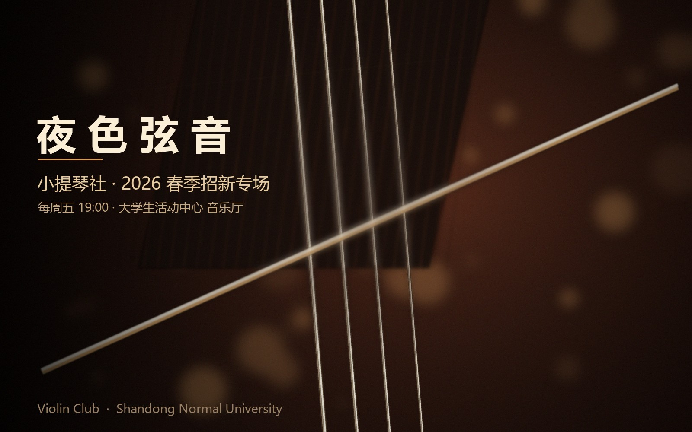

Club Activities
我们的一周，
从一根空弦开始
很多人以为社团活动就是“每周聚一次、拉几首曲子”。真正做起来，它更像一件需要长期维护的事： 有人要提前半小时开门、搬谱架，有人要把上周的排练录音剪好发到群里，有人要记得谁的琴弦快断了、 谁这周要考试不能来。下面这几件事，构成了我们一个学期里最日常的部分。

周五夜排练
每周五 19:00，音乐厅排练室。前半小时是分声部热身与音阶，之后合排曲目。 迟到不扣分，但会被安排去搬椅子——这是社团延续了十年的“传统”。
一对一帮扶
零基础成员入社后，教学部会安排一位师兄师姐，从持琴、运弓、空弦开始带。 不赶进度，只要求每周至少练三次、每次二十分钟。
重奏小组
学期中段，成员自由组队，自己选曲、自己约时间。从《卡农》到流行歌改编， 去年的重奏专场一共演了九首曲子。
公益演出
每学期至少两次，去社区、养老院和乡村小学。曲目会特意选得通俗一些， 演完通常会被要求“再来一首”。
如果你想知道更多，比如排练厅怎么走、公用琴怎么借、期末音乐会的曲目单—— 欢迎在招新主页的报名表里留下联系方式，或者直接在周五晚上推门进来。 我们通常会在门口的桌子上放一壶热水和几块松香，你可以先坐下来，听一会儿。